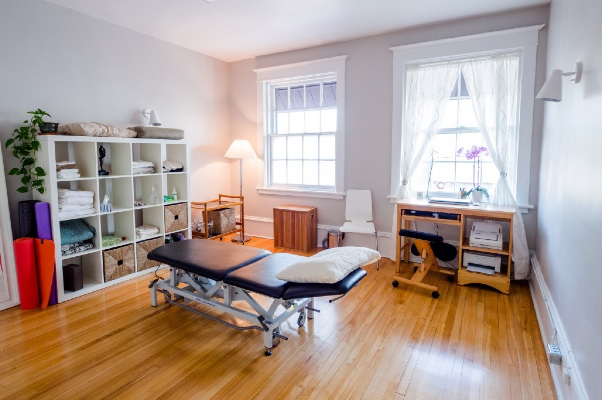

Officially opening January 2027
Visit & referrals
Contact details, what to ask, and how to find us in Westboro.
In collaboration with Core Connections Physiotherapy.

Contact & booking
During our launch, booking and enquiries run through Core Connections reception. The Ottawa Pessary Clinic officially opens January 2027.
- Phone
- 613-291-2956
- Fax
- 613-907-1352
- reception@core-connections.ca
- Hours
- Mon–Fri, 8:30 a.m.–5:00 p.m.
- Address
- 363 Richmond Rd.
Ottawa, ON K2A 0E7
Complimentary phone consultations are available to help you learn about services and choose a next step.
For referring providers
We collaborate with specialists, physicians, nurse practitioners and physiotherapy clinics in Ottawa and surrounding areas. To refer, contact reception by phone, fax (613-907-1352) or email, and ask what information to include.
Follow-up and collaboration with the patient’s healthcare provider are part of pessary care.
Before you come
Questions you might bring
- Is a pessary an option for my symptoms?
- What would an assessment involve, and can I decline or defer any part of it?
- How will follow-up work, and who will be updated?
- Can pelvic health physiotherapy support me alongside a pessary?
You always choose whether to have an internal assessment. You are welcome to take the time you need to feel comfortable and supported.

Accessibility
Getting into the clinic
The clinic is on the second floor and is accessible by stairs only. From the street there are three steps with handrails on both sides, then one flight of stairs with a handrail on the left going up, followed by four more steps.
If stairs are difficult or you are unsure, please contact us before your appointment to discuss options, including telehealth or physiotherapy in your home. Accessible parking is available behind the clinic; please contact us for details.
Common questions
Good to know
When does the Ottawa Pessary Clinic open?
What is a pessary?
Do I have to have an internal assessment?
What languages are services offered in?
Is the care inclusive?
This page is general information, not a diagnosis or medical advice. Fees and referral requirements are not listed here; please contact reception.